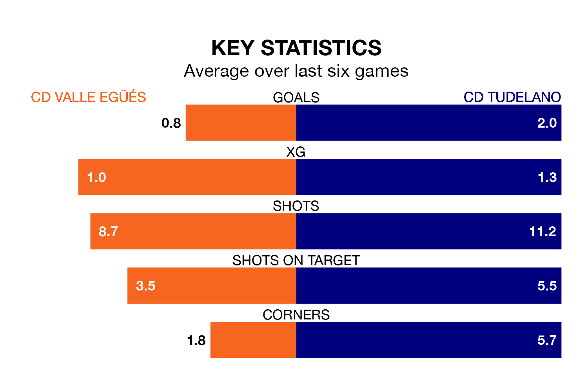

CD Tudelano are strong favourites to take all three points despite CD Valle Egüés's home advantage in Sunday's early match.
*Betting Company* are offering odds of 1.94 on Tudelano sealing the win, with the visitors sitting 10th in the Segunda División RFEF Group 2 table.
Valle Egüés, who are 16th in the league and 21 points behind Tudelano, are priced at 3.45 to win. A draw is set at 3.2.
Valle Egüés are in terrible form in the Segunda División RFEF Group 2, with no wins and a draw from their last six games.
With three wins and a draw over that period, Tudelano's form is much better – they have taken 10 points from 18, compared to the home side's one.
With 23 goals in 32 games so far this season, Valle Egüés are scoring at below the league average rate with 0.7 goals per game. And they are conceding more than average, letting in 52 goals at a rate of 1.6 per game.
The visitors, meanwhile, are above average scorers, with 1.2 goals per game, compared to a league average of 1.1. They have conceded 1.0 goal per game.
Valle Egüés's last match was on Sunday, a 3-0 loss against CD Calahorra.
Tudelano beat CD Izarra 4-0 last time out, also on Sunday, with Gianluca Simeone (two) and Rodrigo Sanz Garro on the scoresheet.
Updated: 07:59 (UTC), 26/04/24